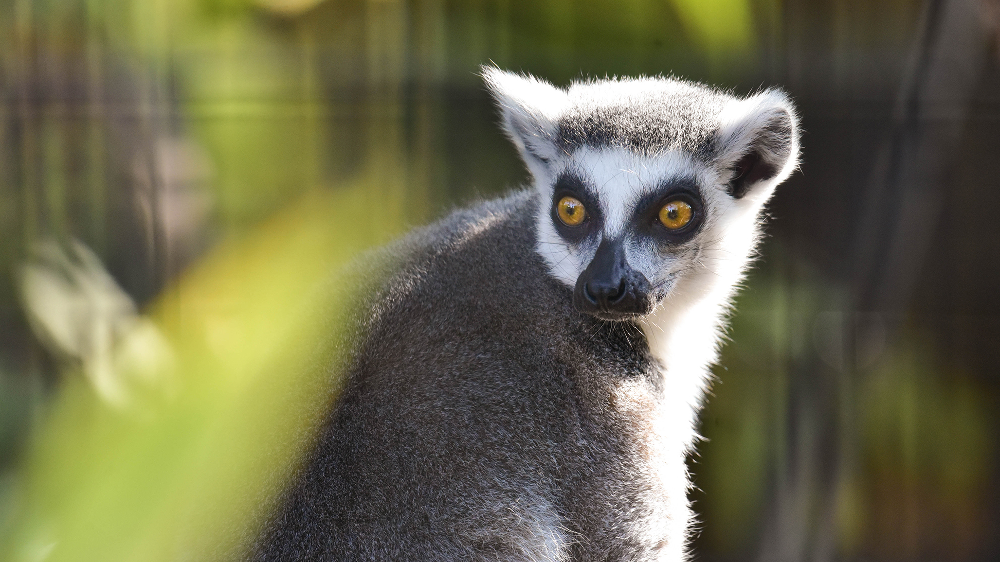

About
Saket's Zoo is a 106-acre (43 ha) zoo located 3 miles (5 km) south of downtown Dallas, Texas, in Marsalis Park. Established in 1888, it is the oldest and largest zoological park in Texas and is managed by the non-profit Dallas Zoological Society. It is home to over 2,000 animals representing 406 species. It is an accredited member of the Association of Zoos and Aquariums (AZA), and is a member of the World Association of Zoos and Aquariums (WAZA).It has wide range of animals
